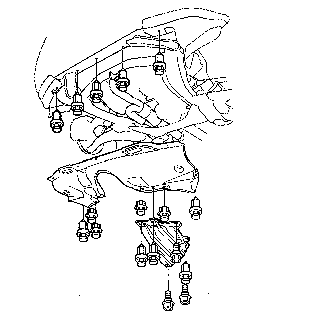
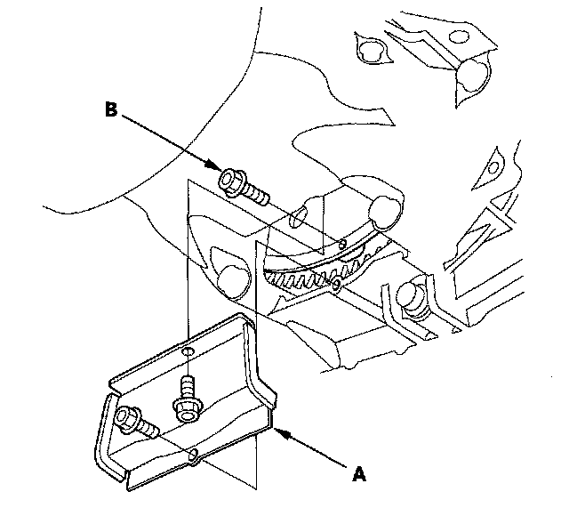
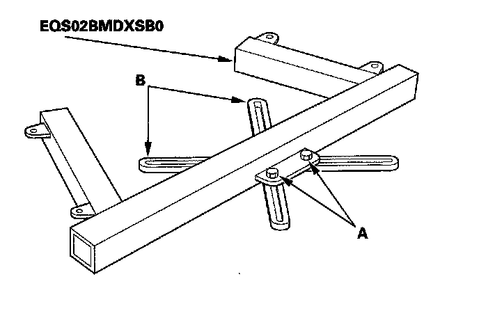

Transmission Removal
Transmission RemovalSpecial Tools Required
^ Engine support hanger, A and Reds AAR-T-12566
^ Engine hanger balancer bar VSB02C000019
^ Engine hanger adapter set VSB02C000031
^ Front subframe adapter EQS02BMDXSB0
These special tools are available through the American Honda Tool and Equipment Program 1-888-424-6857.
NOTE:
^ Use fender covers to avoid damaging painted surfaces.
^ Special tool Reds engine support hanger AAR-T-12566 must be used with the side engine mount installed.
1. Make sure you have the anti-theft codes for the audio system and the navigation system (if equipped).
2. Disconnect the support strut from the pivot ball on both sides (bolted to the hood). Raise and secure the hood in a vertical position. Remove the left side pivot ball and install it into the lower threaded hole, then reattach the support strut.
NOTE: Do not attempt to close the hood with the support strut in the vertical position; it will damage the support strut and the hood.
3. Set the wheels in the straight ahead position, and lock the steering wheel.
4. Drain the power steering system fluid from the reservoir.
5. Make sure the ignition switch is OFF. Disconnect the negative terminal from the battery, then disconnect the positive terminal from the battery.
6. Remove the battery hold-down bracket, and remove the battery cover, battery, and battery tray.
7. Remove the intake manifold cover, intake air duct, and air cleaner housing.
8. Remove the under-hood subfuse box from its bracket, and remove the bracket from the battery base.
9. Remove the battery base and battery base bracket.
10. Remove the front bulkhead cover.
11. Raise the vehicle, and make sure it is securely supported.
12. Remove the transmission undercover and splash shield.

13. Remove the drain plug (A) and drain the automatic transmission fluid (ATF).
14. Reinstall the drain plug with a new sealing washer (B).
15. Disconnect the steering joint.
16. Remove the power steering pump outlet line (A) from the power steering pump, and remove the hose clamp bolt (B).
17. Disconnect the transmission breather hose (A) from the breather pipe (B) at the transmission housing.
18. Disconnect the vacuum hose (C) from the vacuum line (D) and remove the vacuum line bolt.
19. Disconnect the starter cables (A) from the starter, and remove the harness clamp (B) from the clamp bracket (C).
20. Disconnect the solenoid harness connector (D).
21. Remove the dipstick, then remove the starter (A) and gasket (B).
22. Remove the nuts securing the shift cable bracket (A).
23. Remove the spring clip/washer (B) and control pin (C) then separate the shift cable end (D) from the control lever (E).
24. Check the synthetic resin bushing (F) in the shift cable end for a proper fit and wear. If the bushing is loose or worn, replace the shift cable.
25. Disconnect the A/T clutch pressure control solenoid valve A connector (A) A/T clutch pressure control solenoid valve B connector (B) and 4th clutch transmission fluid pressure switch connector (C) and remove the harness cover mounting bolt (D).
26. Disconnect the A/T clutch pressure control solenoid valve C connector (A).
27. Remove the bolts securing the harness cover (B).
28. Disconnect the transmission range switch connector (A) and remove the harness clamp (B) from the clamp bracket (C).
29. Remove the ATF cooler hoses (A) from the ATF cooler lines (B). Turn the ends of the cooler hoses up to prevent ATF from flowing out, then plug the cooler hoses and lines.
30. Disconnect the input shaft (mainshaft) speed sensor connector (A) output shaft (countershaft) speed sensor connector (B) ATF temperature sensor connector (C) and 3rd clutch transmission fluid pressure switch connector (D).
31. Disconnect the 2nd clutch transmission fluid pressure switch connector (A) and remove the vacuum line bolt (B).
32. Remove the bolt securing the engine mount control solenoid valve mounting bracket.
33. Remove the connector bracket from the engine front cylinder head; use the bracket bolt hole to attach engine hanger balancer bar front arm.
34. Remove the transfer breather bracket from the engine rear cylinder head; use the bracket bolt hole to attach engine hanger balancer bar rear arm.
35. Remove the service caps (A) for the front damper flange nuts from the cowl cover (B). Position the engine hanger adapters (VSB02C000031) over the damper flange nuts.
36. Install the engine balance bar (VSB02C000019); attach the front arm (A) to the front cylinder head with a spacer and the 10 mm bolt, and attach the rear arm (B) to the rear cylinder head with the 8 mm bolt.
37. Install the engine support hanger (AAR-T-12566) to the vehicle, and attach the hook to the slotted hole in the engine balance bar. Tighten the wing nut (C) by hand, and to lift and support the engine.
38. Remove the front mount stop (A) and front mount bolt (B).
39. Remove the front subframe stiffener.
40. Remove the exhaust pipe A and its mount (B).
41. Disconnect the headlight adjuster leveling sensor connector (A) on both lower arms, and remove the harness clamps (B) from the front subframe for model equipped with the headlight adjuster leveling system.
42. Remove the lock pins (A) and castle nuts (B) and separate the lower arms (C) from the knuckles (D).
43. Insert a 6 mm Allen wrench (E) in the top of the ball joint pin (F) and remove the nuts (G) then separate the stabilizer link (H).
44. Remove the cotter pins (I) and nuts (J) and separate the tie-rod end ball joints (K) from the knuckles.
45. Remove the bolt securing the transfer breather hose bracket (A) and disconnect the breather hose (B) from the breather pipe (C) on the transfer assembly.
46. Make a reference mark (A) across the propeller shaft (B) and the transfer companion flange (C) and separate the propeller shaft from the transfer companion flange.
47. Remove the transfer assembly from the transmission.
48. Remove the torque converter cover (A) and remove the drive plate bolts (B) (8) while rotating the crankshaft pulley.

49. Disconnect the power steering pressure switch connector.
50. Loosen the hose clamp bolt, then disconnect the power steering fluid hose from the fluid line at the left front of the subframe.
51. Remove the transmission lower mount bolt.
52. Remove the four rear mount bracket bolts.
53. Remove the bolt securing the power steering fluid line clamp bracket (A) on the rear mount bracket, and turn the bracket away from the rear mount bracket.
54. Loosen the four bolts (A) holding the adjustable arms (B) of the front subframe adapter (EQS02BMDXSB0) to its center plate.
NOTE: The adapter is designed to be used with a commercially available transmission jack.

55. Line up the slots in the arms with the bolt holes on the corner of the jack base, then attach the adapter (EQS02BMDXB0) to the jack base with the bolts (A) that came with the jack. Tighten the bolts securely.
56. Raise the jack to the vehicle height, then attach the adapter to the front subframe using the subframe stiffener mounting bolts (B) and bolt holes.
57. Remove the six bolts securing the front stiffeners (A) and rear stiffeners (B) and four bolts securing the front subframe (C) and lower the front subframe.
58. Remove the transmission lower mount (A).
59. Remove the transmission ground terminal (B).
60. Remove the driveshafts from the differential and the intermediate shaft. Coat all precision machined surfaces with clean engine oil, then put plastic bags over driveshaft ends.

61. Remove the exhaust manifold bracket (A) and heat shield (B).
62. Remove the intermediate shaft (C). Coat all precision machined surfaces with clean engine oil, then put the plastic bags over intermediate shaft ends.
63. Remove the upper transmission housing mounting bolts.
64. Remove the lower transmission housing mounting bolts.
65. Remove the harness clamp bracket (A) from the front mount bracket (B) and remove the mount bracket.
66. Remove the transmission housing mounting bolt (C) using a socket 22 mm in length.
67. Remove the rear transmission housing mounting bolts.
68. Place a jack under the transmission.
69. Lower the transmission by loosening the wing nut of the engine support hanger, and tilt the engine just enough for the transmission to clear its end from the side frame.
70. Slide the transmission away from the engine to remove it from the vehicle.
71. Remove the torque converter and dowel pins.
72. Remove the drive plate (A) and washer (B) from the engine crankshaft, and replace the drive plate whenever the transmission is removed from the engine.